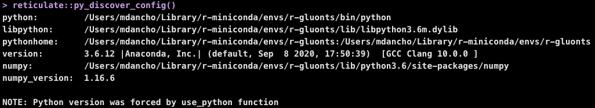

This section covers how to create, modify, and customize GluonTS Python Environments.
Package Requirements
The modeltime.gluonts has the following minimum requirements:
- A recent version of Python (Recommend >= 3.6)
- A Python environment containing:
gluontsmxnetpandasnumpypathlib
That’s it. If you have these inside a Conda or Virtual Environment, then you can use modeltime.gluonts.
Connecting Your Python Environment
There are 2 main ways to connect an python environment to modeltime.gluonts:
Default GluonTS Setup (Quick, Painless, Easy)
Custom Environment Setup (Not too bad either, but has gotchas)
Method 1: Default GluonTS Setup
This process uses the Conda Package Manager to set up a new conda environment called “r-gluonts”. It’s quick and easy, and most importantly the package versions that are selected all work together (I test them when developing).
1. Make sure you have conda
Get the conda version. If you don’t have conda, then install with reticulate::install_miniconda() or reticulate::conda_install().
reticulate::conda_version()2. Run install_gluonts() (set up the Default Environment):
modeltime.gluonts::install_gluonts()3. [Optional] Modifying the Default Environment:
You can modify this environment, adding more python libraries as needed.
reticulate::py_install(
envname = "r-gluonts",
packages = c(
"sklearn"
),
method = "conda",
pip = TRUE
)4. Activate the Default Environment:
Each time you load library(modeltime.gluonts), the package will bind to the “r-gluonts” python environment by default. If found, it will automatically bind to this environment.
5. Check the Environment
Make sure that the environment has been changed to the default ‘r-gluonts’ environment. We can see that r-gluonts environment is being used in the python path.
reticulate::py_discover_config()
Method 2: Custom Python Environment
It’s quite possible you may have a Virtual Environment or different Conda Environment that you would prefer to use. This is possible by setting a System Environment Variable named ‘GLUONTS_PYTHON’ before running library(modeltime.gluonts).
1. [GOTCHA #1] Restart R Session
You will need to restart R session if you’ve already used a reticulate environment or run library(modeltime.gluonts). Restarting the R Session is the only current way to disconnect from an active Python Environment.
Make sure that the environment has been changed to the default reticulate environment. We can see that r-reticulate environment is being used.
reticulate::py_discover_config()
2. Create a Custom Python Environment
You can create an environment containing the python packages needed.
reticulate::py_install(
envname = "my_gluonts_env",
python_version = "3.6",
packages = c(
"mxnet==1.6.0",
"gluonts==0.6.3",
"pandas",
"numpy",
"pathlib"
),
method = "conda",
pip = TRUE
)3. Locate the Python Path
This locates the path to the python executable for the ‘my_gluonts_env’ environment that we just created.
library(dplyr)
my_gluonts_env_python_path <- reticulate::conda_list() %>%
filter(name == "my_gluonts_env") %>%
pull(python)
my_gluonts_env_python_path
#> "/Users/mdancho/Library/r-miniconda/envs/my_gluonts_env/bin/python"4. Set the System Environment Variable
Set the system environment variable named ‘GLUONTS_PYTHON’ with the path to the python executable. Once this is set, loading library(modeltime.gluonts) will use this path to activate the environment.
Sys.setenv(GLUONTS_PYTHON = my_gluonts_env_python_path)Verify it’s been set.
Sys.getenv("GLUONTS_PYTHON")
#> "/Users/mdancho/Library/r-miniconda/envs/my_gluonts_env/bin/python"5. Load Modeltime GluonTS
Running library(modeltime.gluonts) now binds to the custom environment.
6. [Gotcha #2] Check Your Environment
Make sure that the environment has been changed to the default reticulate environment. We can see that environment is being used. If setting your python environment was done properly, you should see my_gluonts_env in the Python Path.
reticulate::py_discover_config()